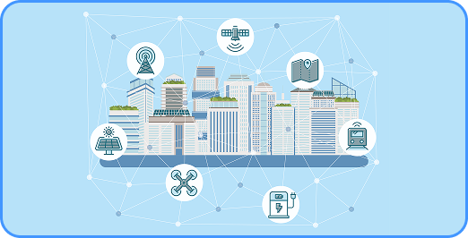
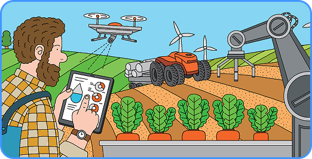

개념 학습
사물 인터넷 기술로 인한 사회의 변화
사물 인터넷 시스템은 사회의 다양한 분야에서 생산성과 효율성을 향상하고 새로운 부가가치를 창출하는 데 도움을 주고 있다. 이러한 변화는 사회 전반에 긍정적 영향을 주어 국가 사업의 문제를 해결하는 수단으로도 활용되고 있다.
스마트 시티

스마트 시티는 도시 전체가 네트워크로 연결되어 있어 도시에서 발생하는 문제를 바로 확인, 해결할 수 있다. 이에 따라 삶의 질이 향상되고 지속 가능한 도시를 만드는 데 도움을 준다.
스마트팜

스마트팜은 사물 인터넷, 빅데이터 등을 활용해 최적의 생육 환경을 자동으로 제어할 수 있는 지능화된 농장을 말한다. 이를 통해 작업 효율을 높이고 수확량을 늘릴 수 있다.